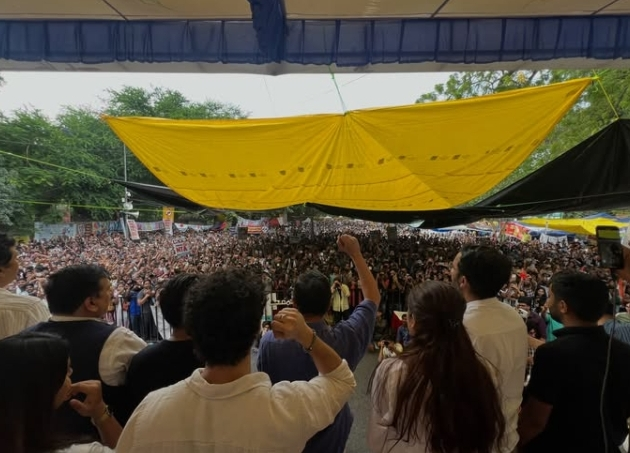

the timeline of how they cooked it.
tap any card to open the receipt. every fact links to a real source — screenshot it, send it to the group chat, whatever. the govt kept the paper less secure than your ex kept your secrets.

-
3 MAY 20262.27 million kids sit the exam+
NEET-UG 2026 is conducted for 2.27 million aspirants — the single exam that decides who gets to be a doctor. no drama yet. that lasts about nine days.
🧾 source: NEET 2026 controversy → -
12 MAY 2026cancelled — a "guess paper" matched ~140 questions+
NTA cancels the exam. a "guess paper" that circulated on WhatsApp and coaching centres in Sikar, Rajasthan overlapped with up to ~140 real questions (esp. Chemistry & Biology). the CBI takes over the probe. imagine studying for 2 years to lose to a WhatsApp forward.
🧾 source: NEET 2026 controversy → -
15 MAY 2026"just resit it lol" — re-exam set for 21 June+
a re-test is scheduled for 21 June. lakhs of exhausted teenagers are told to peak, again, on command — no accountability offered, just a new date. the investigation later finds the same racket had also compromised the 2025 paper.
🧾 source: NEET 2026 controversy → -
6 JUN 2026the roaches assemble 🪳+
the satirical Cockroach Janta Party (CJP) launches protests at Jantar Mantar. the name reclaims a Chief Justice's remark comparing unemployed youth to "cockroaches" and "parasites." Gen-Z looked at an insult and made it a brand. iconic behaviour honestly.
🧾 source: Jantar Mantar protests → -
16–22 JUN 2026Telegram banned for a week+
instead of just, y'know, securing the paper, the Ministry blocks Telegram (16–22 June) to stop leaks; the Delhi High Court upholds it despite Telegram's challenge. bro banned an app to hide the homework he lost. the retest papers get flown around on Air Force aircraft.
🧾 source: NEET 2026 controversy → -
28 JUN 2026Sonam Wangchuk starts a hunger strike+
Ladakhi environmentalist Sonam Wangchuk joins the agitation and begins an indefinite hunger strike, demanding accountability and Education Minister Dharmendra Pradhan's resignation. by 17 July he's lost 9.1 kg.
🧾 source: Jantar Mantar protests → -
18 JUL 2026police drag the hunger-striker to hospital+
after 21 days, Delhi Police forcibly remove Wangchuk and admit him to Safdarjung Hospital despite his resistance. the optics: the state physically carrying off a starving man rather than answering him. cool. normal. very human.
🧾 source: Jantar Mantar protests → -
20 JUL 2026"Sansad Chalo" → tear gas & lathi charge+
10,000+ students march toward Parliament. the response: lathi charges, tear gas, reportedly electrified barricades, ~60 protesters injured, internet shut off near Parliament, metro stations closed, and opposition leaders (incl. Rahul Gandhi) detained. the answer to "why did the exam leak?" was apparently "batons."
🧾 source: IBTimes — police crackdown → -
21 JUL 2026still. no. resignation.+
opposition leaders detained; protesters reclaim the site. the Education Minister — who admitted "a breach in the command chain" — keeps his chair. the one demand at the centre of the whole movement is simply… ignored. meanwhile ≥12 students had already died by suicide in the fallout.
🧾 source: Deccan Herald → -
22 JUL 2026metro shut, CRPF flown in, court says "don't waste our time"+
the DMRC shuts 16 central Delhi metro stations; 20 CRPF companies are airlifted from Kolkata and deployed. Rahul Gandhi is released after being detained outside the PM's residence; opposition leaders protest outside Parliament in solidarity. the CJI rejects an urgent plea over police brutality — "don't waste our time," refusing to review the footage. Wangchuk offers to end his strike if the govt promises no punitive action against students. protesters hold the site through heavy overnight rain.
🧾 source: Jantar Mantar protests → -
23 JUL 2026 · DAY 25Wangchuk drops a reel — the strike hits day 25+
day 25 of the hunger strike. the 16 metro stations stay shut and Parliament stays gridlocked (see the Parliament Watch below). from the protest site, Sonam Wangchuk posts a reel — it's embedded in the "day 25" section further down. the tally so far: 0 resignations, 0 resolutions, 1 hunger strike entering week 4.
🎬 watch the reel on Instagram → -
23 JUL 2026 · LATESTModi breaks silence — with fast-track courts, not a resignation+
after weeks of saying nothing, the PM finally posts on X: "Nothing is more important than the welfare and future of our youth! We have decided to set up fast-track courts to ensure swift and stringent punishment for those involved in paper leaks." he adds that he's directed officials to act, and that anyone harming students' futures "will not be spared." Health Minister J.P. Nadda follows up by asking everyone not to "politicise" the issue.
what the post somehow forgets to mention: the minister still sitting in his chair, the students who got tear-gassed, the FIRs filed against protesters, and the ₹1 crore compensation the families are asking for. fast-track courts for the leakers, zero-track accountability for the leadership. a whole tweet — and it answered none of the three demands. 🐍
🧾 source: Organiser →
what parliament "decided" (spoiler: nothing)
both houses agree there should be a debate. they cannot agree on how to have the debate. that's the entire update. 2.27M futures on hold over a procedure fight.
🟩 Lok Sabha lower house
opened in uproar over the leak, the police action and the resignation demand. Rahul Gandhi wrote to PM Modi seeking a debate and pushed for a discussion; the opposition walked out. President Droupadi Murmu's line to the House: "delay in exams is not fine — the guilty in recent paper leaks will be investigated and punished." (announcements > accountability, apparently.)
🧾 source →🟦 Rajya Sabha upper house
adjourned amid the standoff. Parliamentary Affairs Minister Kiren Rijiju said the govt is "ready to discuss" — just not on the opposition's terms. Mallikarjun Kharge demanded a debate under Rule 267 and made it conditional on Pradhan's resignation. net result: repeated adjournments and a whole lot of nothing.
🧾 source →📋 the verdict, as of 23 Jul: no adjournment motion admitted, no resolution passed, no resignation, no re-exam relief announced in the House — just a deadlock over procedure. the PM's long-awaited response finally arrived on 23 Jul as a post on X, not as a statement to Parliament. a chatbot could've scheduled the meeting.
sonam wangchuk's reel
posted on day 25 of the hunger strike, from Jantar Mantar. if it doesn't load in your browser, tap "watch on Instagram."
see the real footage & coverage
watch the independent journalists who were actually on the ground — embedded straight from YouTube, playable right here. no fabricated photos, no misattributed images, just the real reporting. verify everything.
more receipts → CollegeSearch report · IBTimes crackdown video · Wikipedia: NEET 2026